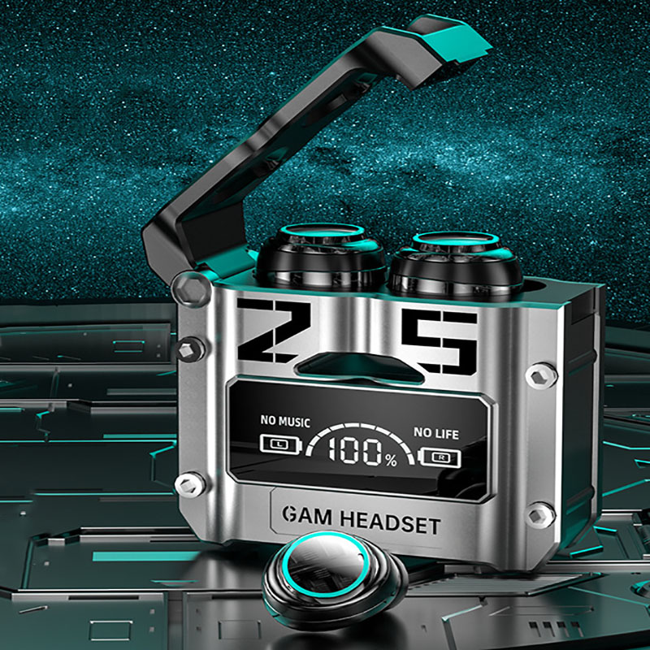

Auriculares Inalámbricos M25

Detalles Técnicos:
- Diseño de cubierta de escotilla magnética: la cubierta de la escotilla está equipada con un imán sensible, que se puede abrir y cerrar girando suavemente sin fuerza.
- Larga vida útil y bajo consumo de energía: 180 horas de vida útil con batería de litio de gran capacidad, sin preocupaciones durante todo el día, música, juegos.
- Diafragma biológico de 3,8 mm: corazón completamente impulsado, buena resolución de audio, detalles sin distorsiones y experiencia auditiva inmersiva.
- Se pueden separar dos oídos: dos auriculares se pueden conectar a diferentes señales de forma independiente sin interferencias entre sí, o se pueden conectar a la misma señal al mismo tiempo para captar un par de estéreo.
- Toque de huellas dactilares: adopta un diseño táctil de huellas dactilares liviano, que es fácil de cambiar y disfrutar del tiempo divertido.
🔙 Volver a la Promoción
💬 Consultar por WhatsApp